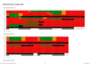

Professional Work
Some details about my professional work

LinkedIn profile shows a good synopsis of my career.
I am Chartered Engineer and a fellow of Chartered Institution of Highways & Transportation (CIHT). A Chief Engineer at Transport for London leading teams that deliver 2,000 projects each year for new or modified traffic lights in Greater London. I led negotiations for the new contracts used to deliver these projects and related maintenance services across over 6,500 sites, generating savings of £42m. I have led the creation of work placements to help ex-Armed Forces personnel who may be wounded, injured or sick into employment and to reduce skills gaps in the engineering sector.
I have led the creation of work placements to help ex-Armed Forces personnel who may be wounded, injured or sick into employment.
TfL and the Poppy Factory work together to get ex-Service members back into employment. TfL has been working with the Armed Forces resettlement support groups and Remploy to create paid work placements to help ex-Armed Forces members - who may be wounded, injured or sick - back into employment. The placements have been extremely successful with the vast majority of people taking part securing permanent employment.
A soldier who lost his legs in a Taliban bomb blast told today of his pride at being among ex-servicemen using their military skills in new jobs on the London transport network. More details Evening Standard and TfL Press Release
London's Transport Commissioner, Mike Brown MVO, said: `Our ex-Service placement scheme has been extremely successful, and we're delighted that, together with our suppliers, we're going to help even more former Armed Forces members back into employment. We have an engineering skills shortage in the transport industry and the scheme is helping us benefit from the skills these brave men and women gain during their careers in the Armed Forces.'
determine.org.uk
A website where traffic signal timing diagrams can be produced. Generate traffic signal timing diagrams to determine green running times.
By entering basic detail of a traffic signal site. Such as :-
Site Address (used in the title of the diagrams);
Phases;
Stage names and phases in stages;
Intergreens;
Phase delays (only phase delay leaving at this point);
Diagrams
Once all details of the site have been entered a report can be generated. The report is centered around the one or more diagrams requested. At the moment the entering of a required diagram is simplistic.
The cycle time is entered followed by a number of forced stage movements to occur during the cycle. A minimum cycle time can be generated by using a cycle time of zero, together with the stage moves in order.